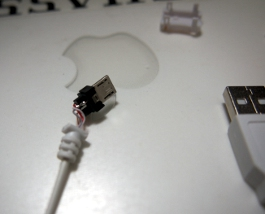

GT-I9100用のJIGを作ってみた(小型100円版)
この内容については無保証です。
下手したら文鎮になるかもしれないので真似するときは要注意。
一応Jig自体は海外通販で売っていたりすでにヤフオクにも売ってるみたいなので自信ない人はそっち買ったほうがよいかも。
（1000円くらいです。正直ぼったくりすぎです）
前回の続きです
[用意するもの]
・はんだこて、はんだ
・テスター
・USB MicroBコネクタ（オス）付きの100円通信ケーブル（Xperia用とか書いてあればOK）１つ
・３００kΩの小型抵抗 １つ
配線も何も要りません。ケースはコネクタのを使いまわします。
今回もテスター持たないものは工作するべからずです。テスターは必ず用意しましょう。
（ショートは最悪の場合煙が出て文鎮化になりますので。。。）
部品の値段はケーブルが100円、抵抗が5円、105円です。小型抵抗は電子部品を扱っている店ならあります。大阪だと共立がデジット、秋葉原だと千石電気あたりが入手しやすいかと
[回路図]
前回と変更なしです。300kになりました。
USB Micro
1 --
2 --
3 --
4 ---[300k]-+
5-----------+
[こんな感じでつくりました]
100円ケーブルのコネクタ部は樹脂で固めてなくてちょうどケースみたいな感じなので爪を安全ピンなどの針で外して空けました。

一応最後に全ての端子でショートしていないか、４と５番は範囲内に収まってるかどうかをテスターでテストしてみましょう。
チェックしたら早速挿しましょう。
小型化成功ですね。
[余談]
USBコネクタのピッチが狭いので隣とブリッジしそうな場合は、使わない端子は折ってしまうという方法があります。
こうするとブリッジ相手がいなくなるのでOKというわけです。
（本当はマスキングすれば良いのですけどね）
[余談2]
今回小型抵抗一つで作りましたが、抵抗には誤差があるので何個か買って301KΩに近いのを使ったほうがより丁寧です。